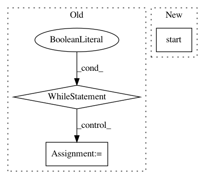

845a5692cd16a152572e8818dbdecfd5d7a7764a,ann_benchmarks/runner.py,,run_docker,#Any#Any#Any#Any#Any#Any#,136
Before Change
mem_limit=mem_limit,
detach=True)
t = t0 = datetime.datetime.now()
while True:
exit_code = None
try:
exit_code = container.wait(timeout=10)
except (requests.exceptions.ReadTimeout, requests.exceptions.ConnectionError) as e:
pass
except:
// If something unexpected happened, just kill the container
container.kill()
// Print any logs since last timestamp
logs = container.logs(since=t)
sys.stdout.buffer.write(logs)
sys.stdout.buffer.flush()
t = datetime.datetime.now()
// Exit if exit code
if exit_code == 0:
return
elif exit_code is not None:
raise Exception("Child process raised exception %d" % exit_code)
// Break if we"ve spent too much time
if (t - t0).total_seconds() > timeout:
raise Exception("Child process time limit %fs exceeded" % timeout)
After Change
print(colors.color(line.decode().rstrip(), fg="yellow"))
t = threading.Thread(target=stream_logs, daemon=True)
t.start()
try:
exit_code = container.wait(timeout=timeout)
except:
container.kill()
In pattern: SUPERPATTERN
Frequency: 3
Non-data size: 3
Instances
Project Name: erikbern/ann-benchmarks
Commit Name: 845a5692cd16a152572e8818dbdecfd5d7a7764a
Time: 2017-12-09
Author: mail@erikbern.com
File Name: ann_benchmarks/runner.py
Class Name:
Method Name: run_docker
Project Name: deepfakes/faceswap
Commit Name: 533025215d6629a1f506838fc9eeed33f2417591
Time: 2019-06-28
Author: 36920800+torzdf@users.noreply.github.com
File Name: lib/gui/wrapper.py
Class Name: FaceswapControl
Method Name: terminate
Project Name: MycroftAI/mycroft-precise
Commit Name: 5d925dae5916ea1adf684a4ea2676777a7ceba80
Time: 2017-11-28
Author: matthew3311999@gmail.com
File Name: precise/record.py
Class Name:
Method Name: main